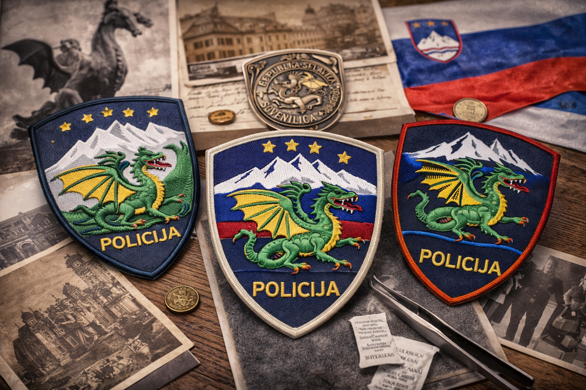

Simbolika Triglavskega zmaja na policijskih insignijah

Triglavski zmaj je eden izmed manj pogostih, a izrazito zanimivih simbolov, ki se pojavljajo v slovenski heraldiki. Njegova uporaba na policijskih insignijah predstavlja povezavo med mitologijo, lokalno identiteto in sodobno institucionalno simboliko. Zmaj kot simbol moči, zaščite in nadzora ima dolgo zgodovino v evropski tradiciji.
V slovenskem kontekstu se simbol zmaja pogosto povezuje z Ljubljano, kjer ima pomembno vlogo v mestni identiteti. Prenos tega simbola v policijsko heraldiko ni naključen, temveč odraža potrebo po vizualni predstavitvi avtoritete in nadzora. Zmaj tako dopolnjuje bolj formalne državne simbole, kot je Triglav.
Oblikovno se ti našitki razlikujejo glede na obdobje in enoto. Nekateri poudarjajo realistično upodobitev zmaja, drugi pa uporabljajo stilizirane verzije. Razlike v izvedbi so pomembne za zbiratelje, saj omogočajo natančnejšo identifikacijo izvora in časa nastanka.
Razumevanje simbolike ni le estetsko vprašanje. Gre za interpretacijo pomenov, ki jih institucije želijo sporočati. Zmaj na insigniji ni zgolj dekorativni element, temveč nosilec sporočila o moči, nadzoru in zaščiti prostora, v katerem deluje.